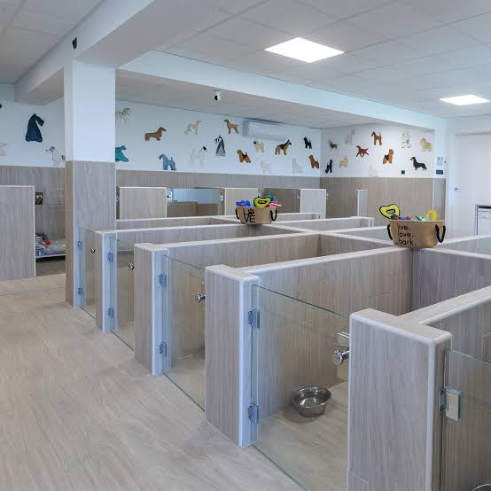
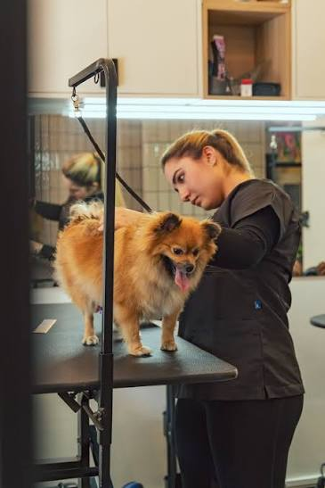
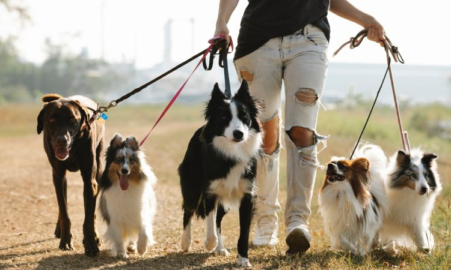
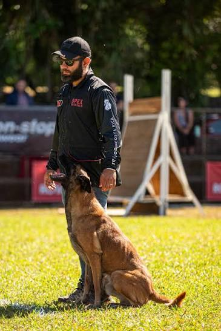
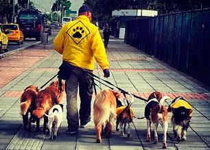
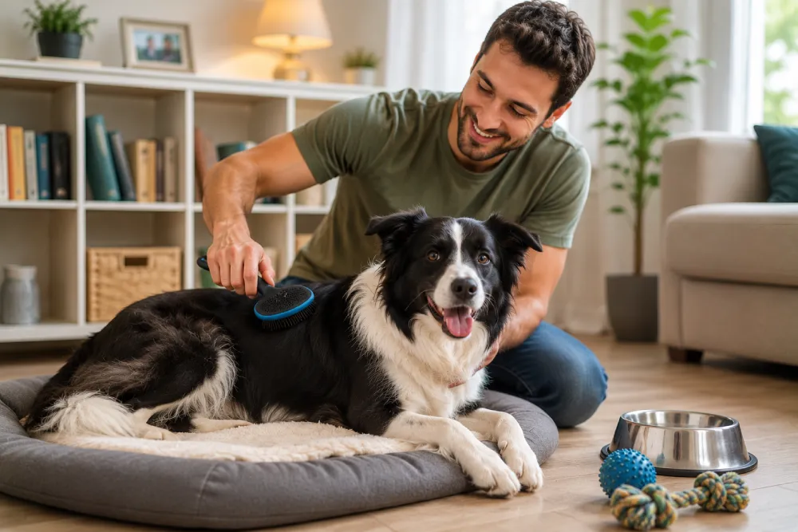

Hotel
Estadia segura, cómoda y con atención personalizada durante tus viajes.

Estadia segura, cómoda y con atención personalizada durante tus viajes.

Baño, limpieza y cuidado para que luzca fresca, relajada y saludable.

Espacios seguros para jugar, socializar y mantenerse activos mientras estás fuera.

Sesiones guiadas para reforzar obediencia, rutinas y comportamiento positivo.

Ejercicio diario, observación de comportamiento y mucha actividad física.

Atención de salud, higiene y bienestar pensada para cada mascota.